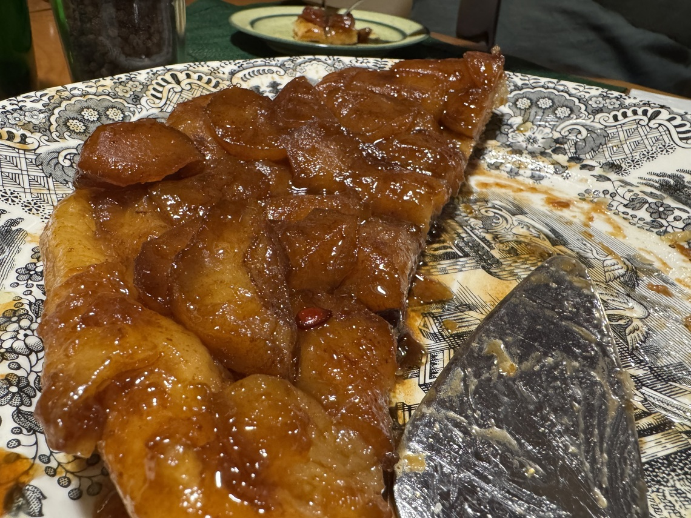
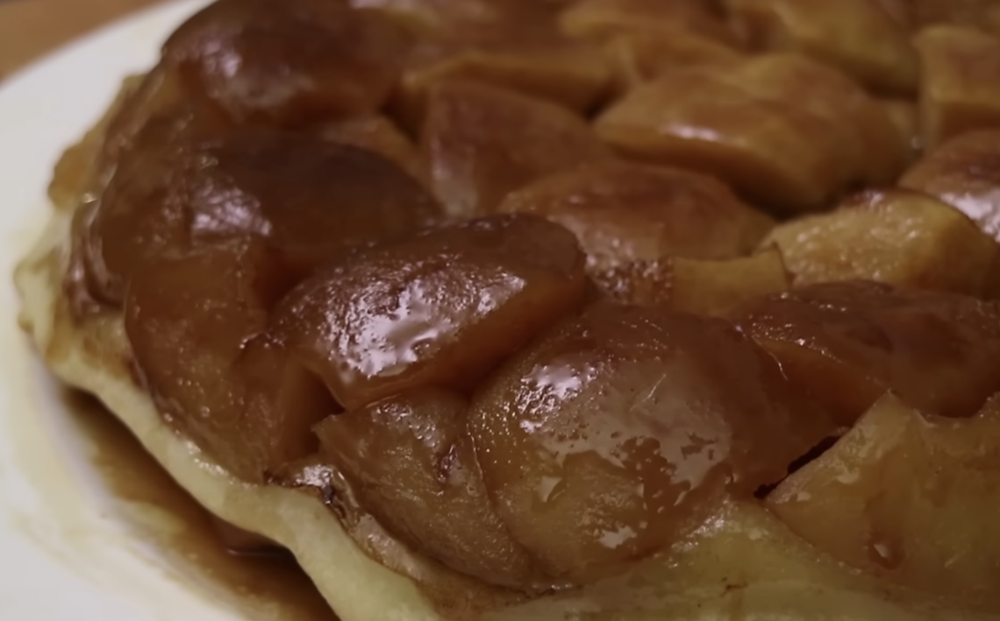

Tarte Tatin
Ingrédients
6×
- moule de 24 cm
- 1.2 kg de pommes
- 150 g de beurre doux
- 140 g de cassonade
- 1 pâte brisée

Recette originale.
Préparation
Pour un moule de 24 cm.
Chauffer le four à 180ºC.
Étape 1
Eplucher et couper 1.2 kg de pommes (Golden ou Reinette) en gros morceaux.
Étape 2
Dans une moule métallique ou poêle qui va au four, caraméliser 150 g de beurre doux avec 140 g de cassonade.
Étape 3
Disposer les quartiers de pomme dans le moule.
Étape 4
Enfourner 30min.
Étape 5
Recouvrir d’1 pâte brisée.
Étape 6
Enfourner 30min une fois de plus.
Étape 7
Demouler à l’envers.
Résumé
moule de 24 cm
Chauffer 180ºC
1.2 kg de pommes
couper
150 g de beurre doux
140 g de cassonade
caraméliser
Disposer
Enfourner
1 pâte brisée
Recouvrir
Enfourner
